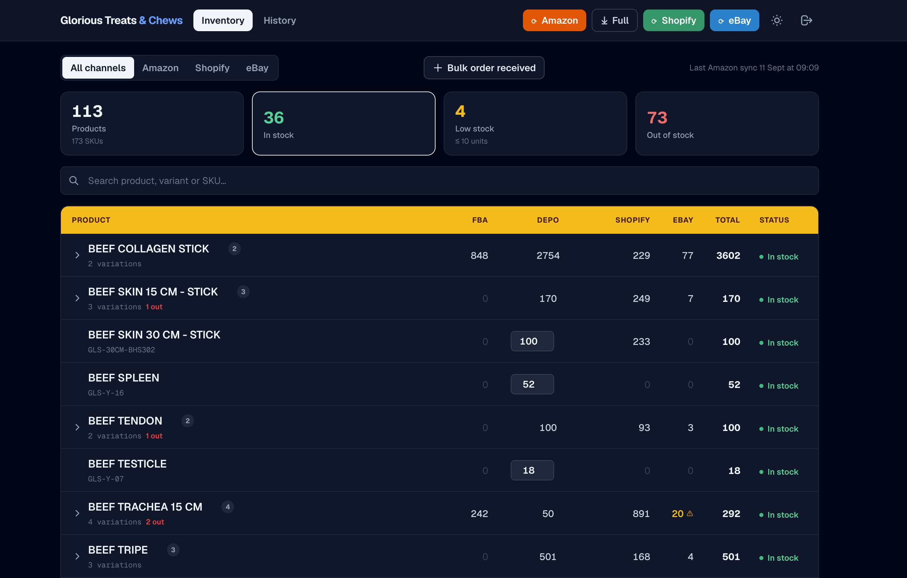

Multi-channel inventory platform
for Glorious Treats & Chews, an online pet-food retailer
The owner sold on Amazon, Shopify and eBay, held stock in a depot, and reconciled it all by hand in one master Excel workbook. I built a web app that gives them a single, live view of every product.
- 113 products (173 SKUs) from three marketplaces plus depot stock in one dashboard
- Stock changes sync between channels within ~5 seconds
- The owner's Excel workbook stays up to date automatically, so their workflow didn't change
- Secure sign-in, stock history and a bulk "receive delivery" flow
Engineering notes
- My own XLSX writer. Round-tripping the workbook through ExcelJS rewrote its theme font, dropped printer settings and reset column widths. My writer edits only the target cells, keeps every cell's style and never overwrites a formula.
- Turkish column headers. The workbook is in Turkish, so the importer maps headers, handles the dotted/dotless "i" casing trap, and still finds the right columns when the owner renames one.
- Fast, polite Amazon syncs. Recent reports are reused, requests are paced and tokens cached, so syncs stay quick and within API limits.
- eBay production access. Built the account-deletion notification endpoint eBay requires, and kept SKU matching advisory so a person confirms uncertain matches.